01ภาพรวม

ชิ้นส่วนของเทพเจ้าแห่ง Chaos ที่หลุดเข้ามาในโลกแห่งความจริง
02ต้นกำเนิด
ปีศาจเกิดจากพลังงานของเทพ Chaos ใน Warp — แต่ละตัวเป็นส่วนหนึ่งของเทพที่มันรับใช้ มันจะเข้ามาในโลกจริงได้เมื่อม่านระหว่างมิติบางลง เช่น ที่รอยแยก Warp พิธีกรรม หรือการสิงร่างผู้มีพลังจิต
03เนื้อเรื่องเจาะลึก
Realm of Chaos
เทพ Chaos อาศัยใน Realm of Chaos ส่วนลึกของ Warp ที่ไม่มีกฎของเวลาและอวกาศ แต่ละเทพมีอาณาจักรของตัวเอง เช่น Garden ของ Nurgle และ Crystal Labyrinth ของ Tzeentch เทพทั้งสี่ขัดแย้งกันเอง "Great Game" ทำให้ไม่มีเทพองค์ใดชนะเด็ดขาด
04ยุค 30K — ในยุค Great Crusade และ Horus Heresy
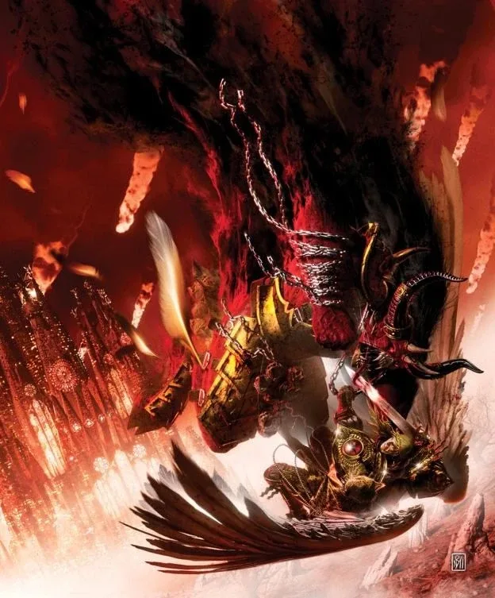
ยุค 30K ปีศาจเป็นอาวุธลับของฝ่าย Horus — เช่น ที่ Signus Prime ปีศาจของ Khorne พยายามทำให้ Blood Angels ตกเป็นทาส ความจริงเรื่องปีศาจถูกปิดบังจากทหารส่วนใหญ่เพราะขัดกับ Imperial Truth ที่ว่า 'ไม่มีเทพเจ้า'
ดูภาพรวมยุค 30K ทั้งหมดที่ เนื้อเรื่องยุค 30K และความต่างของสองยุคที่ เปรียบเทียบ 30K vs 40K
05นิสัยและวัฒนธรรม
- ปีศาจแต่ละเทพมีรูปลักษณ์และนิสัยตามเทพ: Bloodletter (Khorne), Plaguebearer (Nurgle), Pink Horror (Tzeentch), Daemonette (Slaanesh)
- เทพทั้งสี่แข่งกันเองใน 'Great Game' ปีศาจจึงรบกันเองบ่อย
- ถูกฆ่าในโลกจริงเพียงแค่ถูกส่งกลับ Warp
06จุดที่น่าสนใจ
- Greater Daemon: Bloodthirster, Great Unclean One, Lord of Change, Keeper of Secrets
- Be'lakor: Daemon Prince คนแรก ผู้เล่นเกมของตัวเอง
07ความสามารถพิเศษ
สิ่งที่ทำให้ Chaos Daemons แตกต่างจากทัพอื่น — ทั้งพลังที่ติดตัวมาทั้งเผ่า/ทัพ และความสามารถของบุคคลสำคัญ
ของทั้งเผ่า/ทัพ
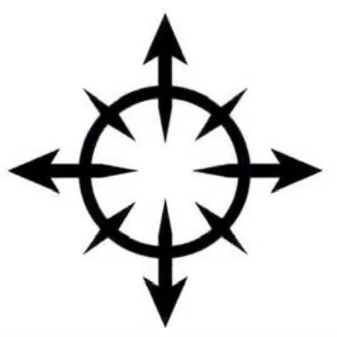
ฆ่าไม่ตายจริง
ปีศาจเกิดจากอารมณ์ใน Warp เมื่อร่างในโลกจริงถูกทำลาย มันแค่ถูกส่งกลับไป Warp และกลับมาได้อีกในอนาคต มีเพียงอาวุธศักดิ์สิทธิ์หรือพลังพิเศษที่ทำลายได้ถาวร

ต้องมี "ประตู" เพื่อเข้าโลกจริง
ปีศาจอยู่ในโลกจริงได้เมื่อ Warp รั่วไหล — จากพิธีกรรม ผู้ใช้พลังจิตที่ถูกสิง หรือรอยแยกขนาดใหญ่อย่าง Great Rift
ชื่อจริงคือจุดอ่อน
การรู้ "ชื่อจริง" ของปีศาจทำให้ผูกมัด บังคับ หรือเนรเทศมันได้ — ความรู้ที่ Grey Knights และพ่อมดแสวงหา

กองทัพของเทพทั้งสี่
Khorne (สงคราม), Tzeentch (การเปลี่ยนแปลง), Nurgle (โรคและความสิ้นหวัง), Slaanesh (ความปรารถนา) แต่ละองค์มีกองทัพปีศาจลำดับชั้นของตัวเอง
ของบุคคลสำคัญ

Be'lakor
Daemon Prince คนแรกDaemon Prince องค์แรกในประวัติศาสตร์ ร่างเป็นเงามืดที่เปลี่ยนรูปและซ่อนตัวได้ ปรากฏในเหตุการณ์สำคัญหลายครั้งตั้งแต่ยุค Horus Heresy จนถึงปัจจุบัน และมักวางแผนเพื่อประโยชน์ของตัวเอง
08หน่วยและบทบาทในกองทัพ
ปีศาจเกิดจากอารมณ์ของสิ่งมีชีวิตใน Warp แต่ละเทพมีลำดับชั้นของปีศาจเป็นของตัวเอง — จาก Greater Daemon (ปีศาจใหญ่) Herald (ผู้ประกาศ) ไปจนถึงปีศาจชั้นล่าง
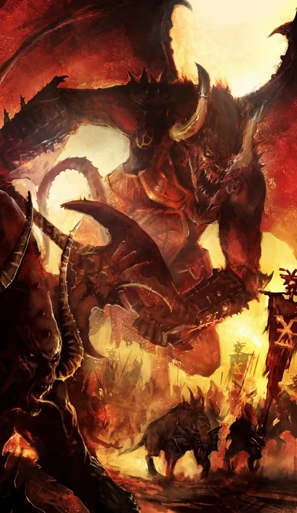
Bloodthirster
บลัดเธิร์สเตอร์Greater Daemon ของ Khorne ร่างยักษ์มีปีก ถือขวานและแส้ นักรบที่น่ากลัวที่สุดของ Chaos
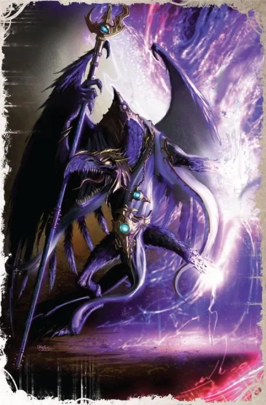
Lord of Change
ลอร์ดออฟเชนจ์Greater Daemon ของ Tzeentch นกยักษ์ผู้วางแผนซับซ้อนและใช้เวทมนตร์ขั้นสูง
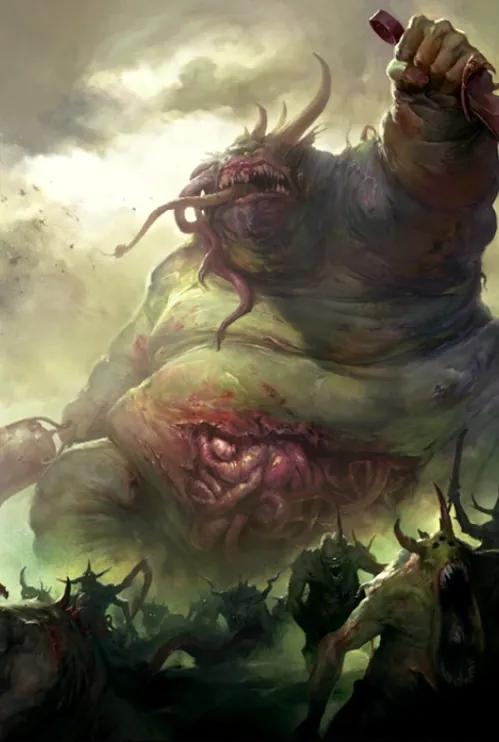
Great Unclean One
เกรตอันคลีนวันGreater Daemon ของ Nurgle ร่างอ้วนเน่า แต่ใจดีอย่างแปลกประหลาด อยากแบ่งปันโรคให้ทุกคน
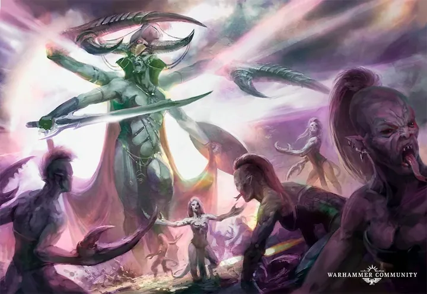
Keeper of Secrets
คีปเปอร์ออฟซีเคร็ตส์Greater Daemon ของ Slaanesh สวยงามแต่น่าสะพรึง รู้ความปรารถนาลับของทุกคน
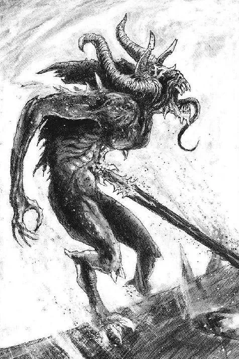
Bloodletters
บลัดเลตเตอร์ปีศาจชั้นล่างของ Khorne ถือดาบ Hellblade
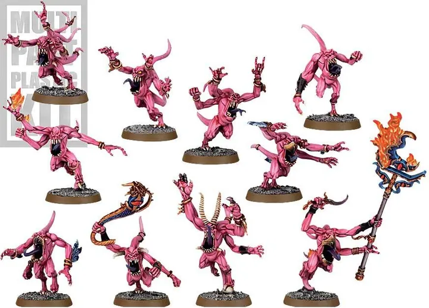
Pink Horrors
พิงก์ฮอร์เรอร์ปีศาจของ Tzeentch ที่หัวเราะตลอด เมื่อตายจะแยกร่างเป็น Blue Horrors และ Brimstone Horrors
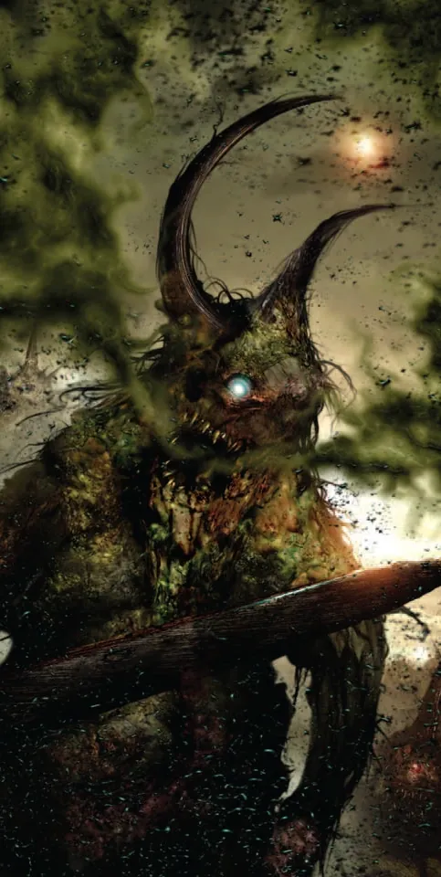
Plaguebearers
เพลกแบเรอร์ปีศาจของ Nurgle ตาเดียว คอยนับจำนวนโรคระบาดในจักรวาล
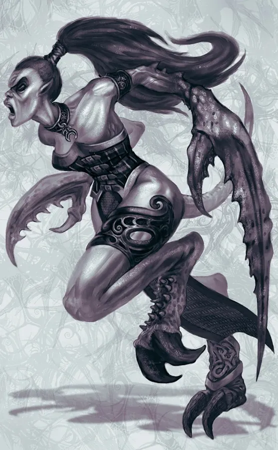
Daemonettes
ดีมอนเน็ตต์ปีศาจของ Slaanesh มีกรงเล็บเหมือนก้ามปู ว่องไวและสวยงามอย่างน่ากลัว
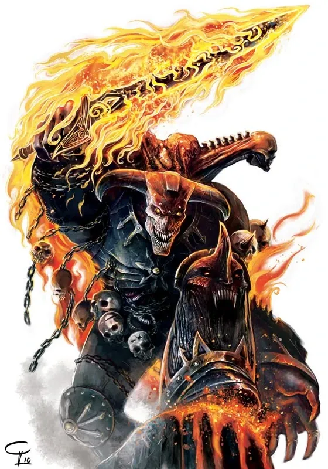
Daemon Prince
ดีมอนพรินซ์มนุษย์หรือ Marine ที่ได้รับรางวัลสูงสุดจากเทพ Chaos กลายเป็นปีศาจอมตะ
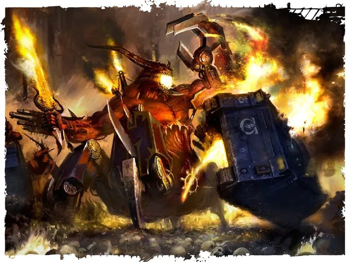
Soul Grinder
โซลไกรนเดอร์เครื่องจักรปีศาจรูปแมงมุม-คน ที่ปีศาจทำสัญญาอยู่ในร่างเหล็ก
09วีรกรรมและเหตุการณ์สำคัญ
กำเนิด Slaanesh
ความเสื่อมของ Aeldari ปลุกเทพองค์ที่ 4
Blood Crusade
ปีศาจของ Khorne ทะลักออกจาก Great Rift ไปทั่วกาแล็กซี
10ตัวละครสำคัญ
Be'lakor
Daemon Prince คนแรกThe Dark Master
11ยุค 40K — สหัสวรรษที่ 41
ยุค 40K การบุกของปีศาจเป็นความลับระดับสูงของจักรวรรดิ — พยานมักถูกลบความทรงจำหรือถูกกำจัด
12เนื้อเรื่องล่าสุด (Era Indomitus / M42)
Great Rift ปล่อยปีศาจเข้าโลกจริงมากที่สุดในประวัติศาสตร์ เทพแต่ละองค์พยายามยึดเขตดาวของตัวเอง เช่น Nurgle ยึด Scourge Stars และ Tzeentch บุก Stygius
หลังการเกิด Great Rift ปฏิทินของจักรวรรดิคลาดเคลื่อน เหตุการณ์ยุคปัจจุบันจึงมักระบุเพียง 'M42' ไม่มีปีที่แน่นอน
13แกลเลอรี


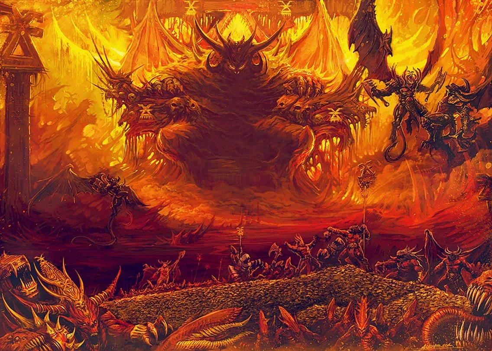